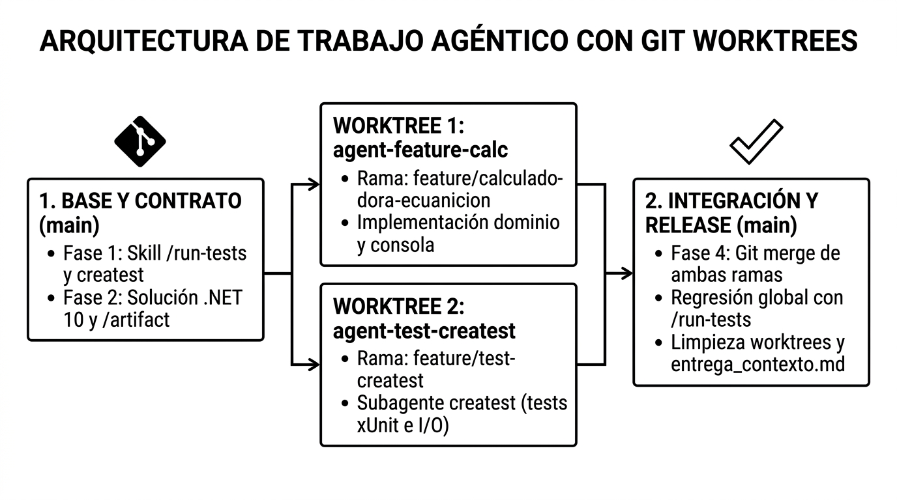
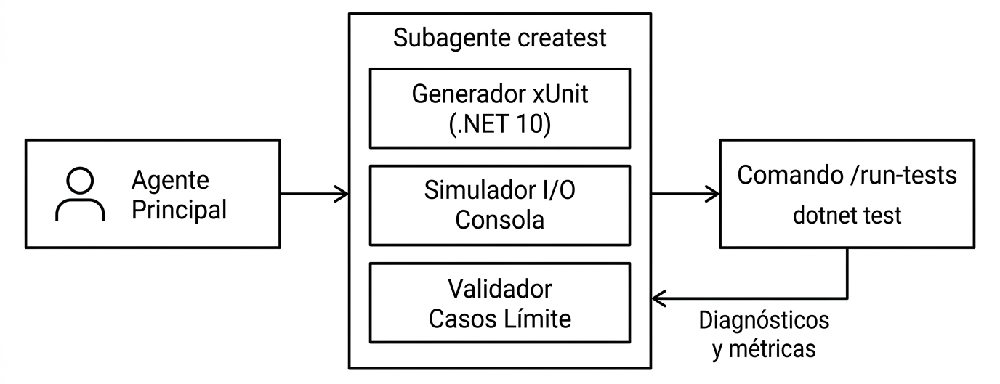
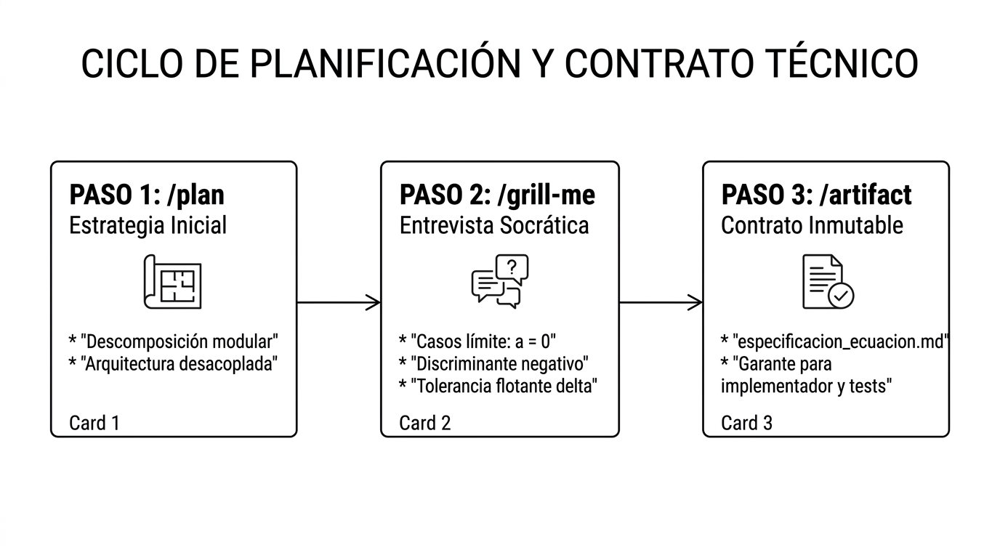
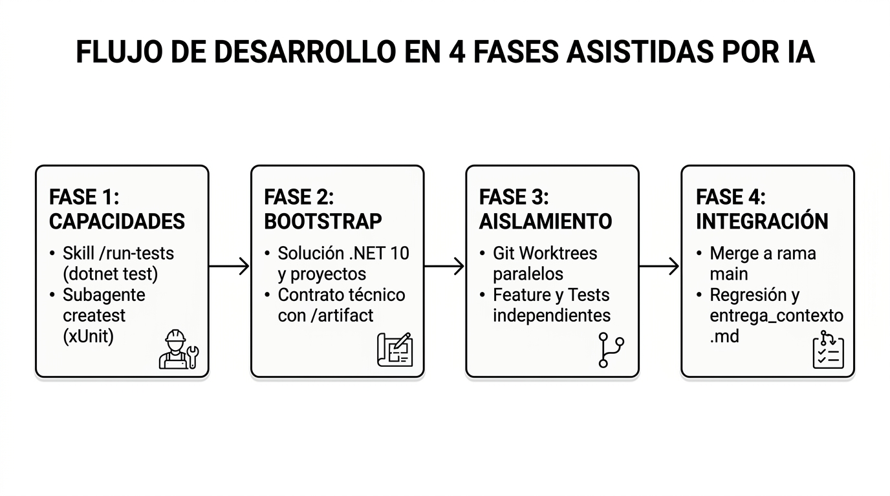

En la Actividad 1 sentamos las bases de Antigravity CLI (agy): configuramos un entorno de terminal eficiente en Windows (cmd.exe), aprendimos la sintaxis operativa con @ y !, exploramos el sistema de permisos revocables con /permissions y examinamos el consumo de contexto mediante /context. Aquella experiencia representaba un patrón de interacción secuencial y monohilo: un único agente respondiendo a peticiones sucesivas.
En el desarrollo de software corporativo contemporáneo, ese flujo resulta insuficiente ante problemas que exigen rigurosidad técnica, desarrollo guiado por pruebas (TDD - Test-Driven Development) y verificación paralela. Los modelos de lenguaje grande (LLMs) modernos alcanzan su máxima eficacia cuando se estructuran como una red coordinada de agentes especializados, cada uno acotado a un rol técnico específico y operando en entornos aislados del sistema de control de versiones.

Al completar esta práctica guiada estructurada en 4 fases secuenciales y asistidas por IA, el estudiante será capaz de:
/run-tests para compilar y parsear suites xUnit en .NET 10, y registrar el subagente especializado de calidad createst con directrices inflexibles de cobertura, aserciones con tolerancia flotante y simulación I/O de consola.EcuacionSegundoGrado.sln) con proyectos de consola y pruebas, blindando las decisiones de diseño mediante /plan y un contrato técnico vinculante inmutable (/artifact create especificacion_ecuacion.md).agent-feature-calc y agent-test-createst) para codificar la lógica de cálculo y la batería de tests en paralelo sin bloqueos de archivos en Windows ni colisiones, validando el 100% de tests en verde con la Skill /run-tests.main mediante Git merge, ejecutar la suite de regresión completa, desmantelar los worktrees temporales con git worktree remove y acreditar la sesión oficial exportando entrega_contexto.md.Antes de comenzar, asegúrate de disponer de los siguientes componentes verificados en tu sistema operativo Windows (a través de cmd.exe):
agy): Instalado y autenticado correctamente (según lo completado en la Actividad 1).net10.0): Instalado y accesible en el PATH del sistema (dotnet --version debe reportar 10.0.x).git worktree.Para comprender en profundidad la actividad práctica guiada, revisaremos los conceptos teóricos y arquitectónicos organizados según las 4 fases secuenciales que estructuran el flujo de trabajo:
En Antigravity CLI, cada paquete de habilidad (Skill) situado en .agents/skills/<nombre>/ que cuente con su archivo SKILL.md expone automáticamente un comando de barra de primer nivel (/<nombre>) en la interfaz interactiva.
Al registrar la habilidad .agents/skills/run-tests/SKILL.md vinculada a un script ejecutable de Windows (scripts/run_tests.cmd), el desarrollador y los subagentes pueden invocar /run-tests en cualquier momento dentro de la CLI. Esto automatiza la compilación con dotnet build, la ejecución de pruebas con dotnet test y la inyección instantánea de resultados y diagnósticos en el contexto del modelo.
Cuando un único modelo de lenguaje asume simultáneamente el diseño de la arquitectura, la implementación del algoritmo, la gestión de la interfaz de usuario y la redacción de las pruebas, se produce una sobrecarga cognitiva en el contexto. El agente tiende a realizar pruebas complacientes: tests que se limitan a confirmar el código que él mismo acaba de escribir, omitiendo casos límite y condiciones de fallo.
Para solucionar este sesgo, Antigravity CLI introduce el concepto de Subagentes. Un subagente es una instancia dedicada del modelo que posee:
inherit para compartir el directorio de trabajo, o branch para operar en un entorno de desarrollo aislado ramificado respaldado por un worktree de Git.
/plan, /grill-me y /artifact Una arquitectura profesional en .NET 10 (net10.0) exige separar responsabilidades en proyectos independientes dentro de un archivo de solución (.sln):
EcuacionSegundoGradoApp): Contiene la lógica de dominio matemático (CalculadoraCuadratica) y la interacción con el usuario (Program.cs).EcuacionSegundoGradoApp.Tests): Suite de pruebas automatizadas que referencia al proyecto de consola para validar sus contratos públicos sin contaminar el binario final de distribución.La improvisación es la causa principal del código defectuoso generado por IA. Antigravity proporciona un protocolo estructurado en 3 pasos para transformar ideas informales en contratos de ingeniería antes de escribir código:

/plan (Estrategia Inicial): Desencadena el modo de razonamiento estructurado del modelo para descomponer el problema en componentes, interfaces y fases de entrega./grill-me (Entrevista Socrática): El agente somete al desarrollador a una ronda de preguntas rigurosas sobre casos límite y decisiones de diseño:
ArgumentException, mientras que la consola debe solicitar un reintento amigable).ResultadoEcuacion).double)? (Se adopta para mitigar desbordamientos y redondeos de la norma IEEE 754)./artifact (Registro y Versionado de Especificaciones): Los acuerdos se consolidan como un artefacto persistente e inmutable (especificacion_ecuacion.md). Este documento sirve como contrato vinculante indiscutible tanto para el agente implementador como para el subagente de testing.El comando tradicional git checkout -b <rama> conmuta el estado de los archivos en la misma carpeta física del disco duro. Si un subagente y el agente principal intentan modificar archivos o ejecutar dotnet build simultáneamente sobre el mismo directorio, se generan bloqueos de archivos en Windows (file locks en archivos .dll o .pdb dentro de bin\Debug\net10.0) y colisiones en el árbol de trabajo.
La solución arquitectónica es Git Worktrees (git worktree):
.git central.agent-feature-calc): Vinculado a la rama feature/calculadora-ecuacion. El agente implementador programa la lógica de cálculo y la consola sin que existan tests todavía.agent-test-createst): Vinculado a la rama feature/test-createst. El subagente createst redacta la suite de pruebas unitarias xUnit y las pruebas de integración I/O de consola, validando su ejecución con la Skill /run-tests.Una vez concluidas las tareas en los entornos aislados, el flujo agéntico procede a la integración y cierre del ciclo de entrega:
/artifact, los cambios de la feature y de los tests se fusionan de forma limpia y desatendida en la rama main./run-tests sobre la solución integrada en main para certificar que el 100% de las pruebas aprueben en verde (0 fallos).git worktree remove): Se eliminan las carpetas de trabajo secundarias, conservando la rama main en un estado impecable.entrega_contexto.md): Se vuelca la transcripción estructurada de la sesión y el estado de contexto mediante /export-session para acreditar fehacientemente la autoría asistida por IA y la trazabilidad del proyecto.En esta actividad práctica, el estudiante asume el rol de Ingeniero Líder y Orquestador de IA. A diferencia de los flujos de desarrollo tradicionales, todos los pasos se ejecutarán mediante interacción asistida por LLM en Antigravity CLI (agy), eliminando cualquier manipulación manual de ficheros en el editor y comandos de redirección tipo echo >>.
El alumno guiará al agente principal y a los subagentes especializados mediante prompts técnicos rigurosos, supervisando en cada paso los parámetros esperados y validando los criterios de aceptación verificables.
cmd.exe) Antes de iniciar la sesión de orquestación, abre cmd.exe para preparar el directorio de trabajo limpio e inicializar el repositorio Git:
mkdir D:\proyectos\proyecto-ecuacion-agy cd /d D:\proyectos\proyecto-ecuacion-agy git init git config user.name "Nombre Apellidos" git config user.email "@alu.edu.gva.es" agy
Una vez iniciado el entorno interactivo de Antigravity CLI (agy>), abordaremos el ciclo completo a través de 4 fases secuenciales y asistidas:

Antes de escribir una sola línea de lógica de negocio, dotamos al entorno agéntico de sus herramientas operativas y roles especializados. Crearemos la Skill encargada de compilar, ejecutar y parsear las pruebas con dotnet test y configuraremos el subagente de calidad createst.
run-tests) Contexto Operativo:
Para evitar que los agentes ejecuten llamadas dispersas a la consola y parseen manualmente texto no estructurado, creamos una habilidad (Skill) reutilizable bajo el estándar de Antigravity Customization System. Esta Skill expone el Custom Command /run-tests y un script ejecutable .cmd que compila el proyecto de pruebas, ejecuta dotnet test con formato normalizado y extrae un informe estructurado con el número de pruebas superadas, fallidas, tiempos de ejecución y detalles precisos de aserción en caso de fallo.
Prompt para el Alumno (Introducir en agy>):
agy> Genera una nueva Skill en el proyecto llamada 'run-tests' siguiendo el estándar de Antigravity Customization System. Crea la estructura de carpetas '.agents/skills/run-tests/' con su manifiesto '.agents/skills/run-tests/SKILL.md' y el script ejecutable '.agents/skills/run-tests/scripts/run_tests.cmd'. Requisitos para la Skill: 1. El script 'run_tests.cmd' debe ejecutar: dotnet test EcuacionSegundoGradoApp.Tests\EcuacionSegundoGradoApp.Tests.csproj --nologo --verbosity normal --logger "console;verbosity=normal" 2. El archivo 'SKILL.md' debe tener su frontmatter YAML con 'name: run-tests' y una descripción técnica clara de compilación y ejecución de tests xUnit en .NET 10. 3. En el cuerpo de 'SKILL.md', instruye al agente para que: - Invoque el script auxiliar '.agents/skills/run-tests/scripts/run_tests.cmd'. - Parsee e interprete la salida de 'dotnet test'. - Si todos los tests pasan, informe en el chat con un resumen del total de pruebas aprobadas y el tiempo total. - Si algún test falla, identifique la clase de test, la línea exacta y la aserción esperada frente a la recibida. 4. Asegúrate de que el script '.cmd' tenga sintaxis válida para Windows cmd.exe. 5. Registra todos los archivos creados en Git con el commit 'feat(skills): registrar custom command /run-tests'.
Parámetros Esperados:
.agents/skills/run-tests/SKILL.md (con frontmatter YAML: name: run-tests, description: ...)..agents/skills/run-tests/scripts/run_tests.cmd.dotnet test ... --nologo --verbosity normal --logger "console;verbosity=normal".feat(skills): registrar custom command /run-tests.Criterios de Aceptación Verificables por el Alumno:
.agents/skills/run-tests/ contiene tanto SKILL.md como scripts/run_tests.cmd.run_tests.cmd incluye los flags --nologo y el logger de consola./skills reload Antigravity CLI reconoce el comando de barra /run-tests.git log -1 muestra el commit registrado en el historial de Git.createst) Contexto Operativo:
Para garantizar rigor metodológico (Test-Driven Development) y eliminar el sesgo de complacencia que ocurre cuando un único modelo escribe el código y sus propios tests, definimos el subagente especializado createst. Este agente tiene la misión exclusiva de evaluar y estresar la lógica mediante pruebas xUnit parametrizadas, aserciones flotantes con tolerancia y pruebas de integración I/O con flujos simulados de consola.
Prompt para el Alumno (Introducir en agy>):
agy> Configura un subagente especializado de testing llamado 'createst' dentro de '.agents/subagents/'.
Crea el manifiesto de configuración '.agents/subagents/createst.json' y su especificación detallada en '.agents/subagents/createst.md' con las siguientes directrices obligatorias:
1. Rol profesional: 'Senior Quality and xUnit Test Automation Engineer'.
2. Herramientas: 'enable_write_tools: true' (para generar archivos de test) y 'enable_subagent_tools: false'.
3. Directrices estrictas en el System Prompt y directiva Markdown:
- Especialización exclusiva en testing unitario y de integración para .NET 10 y xUnit en el proyecto 'EcuacionSegundoGradoApp.Tests'.
- Uso obligatorio de pruebas parametrizadas con '[Theory]' e '[InlineData]' para evaluar múltiples combinaciones numéricas.
- En operaciones con números en coma flotante ('double'), exigir siempre aserciones con tolerancia delta (precisión mínima de 5 decimales): 'Assert.Equal(esperado, actual, 5)'.
- Blindaje de casos límite: discriminante positivo (>0, dos raíces reales), discriminante nulo (=0, raíz real doble), discriminante negativo (<0, raíces complejas conjugadas) y coeficiente principal a=0 (lanzamiento de 'ArgumentException').
- Pruebas de integración para consola I/O en 'Program.cs' redirigiendo 'Console.In' con 'StringReader' y 'Console.Out' con 'StringWriter', restaurando los flujos originales en bloques 'finally'.
- Obligación de usar la Skill '/run-tests' para ejecutar las pruebas y garantizar que pasen al 100% en verde antes de dar una tarea por finalizada.
4. Registra los archivos generados en Git con el commit 'feat(agents): definir subagente especializado createst para xUnit e I/O'.
Parámetros Esperados:
.agents/subagents/createst.json con name: "createst", role especializado y system_prompt exhaustivo..agents/subagents/createst.md con las reglas de cobertura y tolerancia numérica.enable_write_tools: true).feat(agents): definir subagente especializado createst para xUnit e I/O.Criterios de Aceptación Verificables por el Alumno:
.agents/subagents/createst.json y .agents/subagents/createst.md.[Theory], Assert.Equal(..., 5), casos límite y simulación I/O con StringReader/StringWriter./run-tests.git status confirma que los archivos han sido añadidos y commiteados.Roles Hiperespecializados en TDD
Al aislar a createst en un rol que únicamente diseña y escribe pruebas, el agente no cae en la tentación de modificar la lógica de producción para hacer que los tests pasen artificialmente. Su único objetivo es encontrar fisuras en el algoritmo.
En esta fase, el agente actúa como Arquitecto de Software y Orquestador. Sin tocar archivos manualmente ni ejecutar comandos de shell externos, el alumno le ordena generar la solución .NET 10, los proyectos de consola y pruebas, la referencia entre proyectos, el .gitignore y el contrato formal de diseño mediante un artefacto inmutable.
Contexto Operativo:
La solución requiere una arquitectura desacoplada en .NET 10 (net10.0): un proyecto de consola ejecutable (EcuacionSegundoGradoApp) y un proyecto de pruebas unitarias (EcuacionSegundoGradoApp.Tests). El proyecto de tests debe referenciar al de consola para instanciar sus clases de dominio. Todo el bootstrap debe quedar compilado y versionado en Git con su .gitignore correspondiente.
Prompt para el Alumno (Introducir en agy>):
agy> Actúa como Arquitecto de Software .NET y genera el bootstrap completo de la solución: 1. Crea un archivo de solución .sln llamado 'EcuacionSegundoGrado'. 2. Crea un proyecto de aplicación de consola en .NET 10 con nombre 'EcuacionSegundoGradoApp' (-f net10.0). 3. Crea un proyecto de pruebas unitarias xUnit en .NET 10 con nombre 'EcuacionSegundoGradoApp.Tests' (-f net10.0). 4. Agrega ambos proyectos a la solución 'EcuacionSegundoGrado.sln'. 5. Agrega la referencia de proyecto desde 'EcuacionSegundoGradoApp.Tests' hacia 'EcuacionSegundoGradoApp' para que el suite de tests consuma la aplicación. 6. Crea un archivo '.gitignore' estándar para .NET (omitiendo bin/, obj/, .vs/, etc.) y un 'README.md' descriptivo del proyecto. 7. Ejecuta 'dotnet build' para verificar que la compilación inicial de la plantilla sea 100% exitosa con 0 errores y 0 advertencias. 8. Realiza el commit inicial en la rama 'main' de Git con el mensaje: 'feat: inicializacion de solucion .NET 10 con app de consola y tests xUnit'.
Parámetros Esperados:
EcuacionSegundoGrado.sln.EcuacionSegundoGradoApp/EcuacionSegundoGradoApp.csproj (TargetFramework net10.0).EcuacionSegundoGradoApp.Tests/EcuacionSegundoGradoApp.Tests.csproj (TargetFramework net10.0, paquete xunit).<ProjectReference Include="..\EcuacionSegundoGradoApp\EcuacionSegundoGradoApp.csproj" />..gitignore con exclusión de binarios de compilación.feat: inicializacion de solucion .NET 10 con app de consola y tests xUnit.Criterios de Aceptación Verificables por el Alumno:
EcuacionSegundoGrado.sln y las subcarpetas de ambos proyectos.dotnet build reporta 0 Errores y 0 Advertencias.EcuacionSegundoGradoApp.Tests.csproj contiene la referencia al proyecto de consola.git log --oneline -1 muestra el commit inicial de bootstrap./plan, /artifact) Contexto Operativo:
Antes de escribir código o bifurcar ramas en Git, es imprescindible establecer un contrato técnico vinculante. Este contrato fija la firma de métodos, modelos de datos inmutables, gestión de excepciones y tolerancias de precisión matemática, asegurando que tanto el agente implementador como el subagente de testing trabajen bajo el mismo estándar sin ambigüedades.
Prompt para el Alumno (Introducir en agy>):
agy> /plan Vamos a diseñar el contrato técnico y la arquitectura para resolver la ecuación cuadrática ax^2 + bx + c = 0 en .NET 10.
Genera y registra un artefacto inmutable mediante '/artifact create especificacion_ecuacion.md' con las siguientes especificaciones técnicas:
1. Clase de dominio: 'CalculadoraCuadratica' estática en el namespace 'EcuacionSegundoGradoApp'.
2. Método público: 'public static ResultadoEcuacion Resolver(double a, double b, double c)'.
3. Constante de tolerancia flotante: 'public const double Tolerancia = 1e-9;'.
4. Manejo de excepciones: Si 'Math.Abs(a) < Tolerancia', lanza 'ArgumentException("El coeficiente \'a\' no puede ser cero en una ecuación de segundo grado.", nameof(a))'.
5. Modelo de resultados: Record 'ResultadoEcuacion' con:
- Enum 'TipoResultado' con valores: 'DosRaicesReales', 'RaizDoble', 'RaicesComplejas'.
- Propiedades: 'TipoResultado Tipo', 'double? X1', 'double? X2', 'double? ParteReal', 'double? ParteImaginaria'.
6. Reglas matemáticas del discriminante delta = b^2 - 4ac:
- delta > Tolerancia: DosRaicesReales, con X1 = (-b + sqrt(delta))/(2a) y X2 = (-b - sqrt(delta))/(2a).
- |delta| <= Tolerancia: RaizDoble, con X1 = X2 = -b / (2a).
- delta < -Tolerancia: RaicesComplejas, con ParteReal = -b / (2a) y ParteImaginaria = sqrt(-delta) / (2a).
7. Interfaz de consola en 'Program.cs':
- Función 'LeerCoeficiente' que emplee 'double.TryParse' con 'CultureInfo.InvariantCulture'.
- Reintento ante formato numérico inválido o cuando el usuario ingrese a=0 (mostrando mensaje explicativo sin terminar el programa).
- Impresión formateada a 5 decimales (F5).
Parámetros Esperados:
especificacion_ecuacion.md.CalculadoraCuadratica, ResultadoEcuacion, TipoResultado.1e-9 para mitigar errores de redondeo IEEE 754.CultureInfo.InvariantCulture.Criterios de Aceptación Verificables por el Alumno:
/artifact list reporta especificacion_ecuacion.md como artefacto activo.En esta fase se explota la potencia del desarrollo agéntico paralelo mediante Git Worktrees (git worktree). Se crean dos entornos de trabajo aislados en carpetas físicas independientes para evitar bloqueos de archivos en Windows y colisiones de código. A continuación, el agente implementador codifica la aplicación y el subagente createst redacta la suite de tests, validando su aprobación en verde con la Skill /run-tests.
Contexto Operativo:
Para que dos agentes trabajen concurrentemente sin interferir en los mismos archivos ni bloquear compilaciones de .dll, creamos dos carpetas de trabajo físicas asociadas a ramas independientes del repositorio Git: ..\agent-feature-calc (rama feature/calculadora-ecuacion) y ..\agent-test-createst (rama feature/test-createst).
Prompt para el Alumno (Introducir en agy>):
agy> Prepara dos Git Worktrees independientes a partir del commit actual de la rama 'main': 1. Crea el primer worktree en la ruta relativa '..\agent-feature-calc' vinculado a una nueva rama 'feature/calculadora-ecuacion'. 2. Crea el segundo worktree en la ruta relativa '..\agent-test-createst' vinculado a una nueva rama 'feature/test-createst'. 3. Ejecuta 'git worktree list' y muestra la tabla con las rutas físicas y ramas activas para confirmar que el entorno está debidamente aislado.
Parámetros Esperados:
..\agent-feature-calc, rama feature/calculadora-ecuacion...\agent-test-createst, rama feature/test-createst.git worktree list.Criterios de Aceptación Verificables por el Alumno:
D:\proyectos\agent-feature-calc y D:\proyectos\agent-test-createst.git worktree list enumera los 3 worktrees (main, feature/calculadora-ecuacion y feature/test-createst).Contexto Operativo:
El agente implementador se sitúa en el espacio de trabajo aislado ..\agent-feature-calc. Siguiendo al pie de la letra el artefacto de especificación técnica, programa la lógica de dominio en CalculadoraCuadratica.cs, los modelos de datos en ResultadoEcuacion.cs y la interfaz de consola en Program.cs.
Prompt para el Alumno (Introducir en agy>):
agy> Actúa como Desarrollador Senior .NET 10 en el worktree '..\agent-feature-calc' (rama 'feature/calculadora-ecuacion'): 1. Consulta el artefacto 'especificacion_ecuacion.md' para asegurar total conformidad con los contratos pactados. 2. Implementa en el proyecto 'EcuacionSegundoGradoApp': - 'ResultadoEcuacion.cs': Define el enum 'TipoResultado' (DosRaicesReales, RaizDoble, RaicesComplejas) y el record posicional inmutable 'ResultadoEcuacion(TipoResultado Tipo, double? X1 = null, double? X2 = null, double? ParteReal = null, double? ParteImaginaria = null)'. - 'CalculadoraCuadratica.cs': Clase estática con constante 'Tolerancia = 1e-9' y método 'Resolver(double a, double b, double c)'. Lanza 'ArgumentException' si Math.Abs(a) < Tolerancia. Calcula el discriminante considerando la tolerancia para discriminar raíces reales dobles, dos raíces reales distintas o raíces complejas conjugadas (alpha +- beta * i). - 'Program.cs': Programa de consola interactivo con método auxiliar 'LeerCoeficiente(string mensaje, bool permitirCero)'. Utiliza 'double.TryParse' con 'CultureInfo.InvariantCulture'. Si 'permitirCero' es false y el usuario introduce 0, emite un mensaje de error y solicita reintento sin salir del programa. Muestra los resultados formateados con 5 decimales según el tipo de solución. 3. Ejecuta 'dotnet build' en la carpeta '..\agent-feature-calc' para certificar que la compilación es limpia (0 errores, 0 advertencias). 4. Registra los cambios en Git dentro de esa rama con el commit: 'feat(calc): implementar logica de dominio y consola para ecuacion de segundo grado'.
Parámetros Esperados:
ResultadoEcuacion.cs, CalculadoraCuadratica.cs, Program.cs.dotnet build limpia.feat(calc): implementar logica de dominio y consola para ecuacion de segundo grado en la rama feature/calculadora-ecuacion.Criterios de Aceptación Verificables por el Alumno:
..\agent-feature-calc\EcuacionSegundoGradoApp\.dotnet build ..\agent-feature-calc compila sin errores.git -C ..\agent-feature-calc log -1 muestra el commit de la funcionalidad en la rama de la feature.createst) Contexto Operativo:
De forma concurrente y desacoplada, invocamos al subagente createst en el worktree ..\agent-test-createst. Este agente redacta la suite de pruebas unitarias xUnit (CalculadoraCuadraticaTests.cs) y las pruebas de integración I/O de consola (IntegracionConsolaTests.cs). Para validar su propio trabajo, ejecuta la Skill /run-tests asegurando que el 100% de los tests estén en verde.
Prompt para el Alumno (Introducir en agy>):
agy> Invoca al subagente 'createst' en el espacio de trabajo '..\agent-test-createst' (rama 'feature/test-createst'):
1. Basándote en el contrato de 'especificacion_ecuacion.md' y en el código de dominio referenciado, implementa en 'EcuacionSegundoGradoApp.Tests':
- 'CalculadoraCuadraticaTests.cs':
* Pruebas parametrizadas con '[Theory]' e '[InlineData]' para discriminante positivo (ej. a=1,b=-5,c=6 -> x1=3,x2=2; a=1,b=-1,c=-6 -> x1=3,x2=-2; a=2,b=-7,c=3 -> x1=3,x2=0.5). Aserciones con 'Assert.Equal(esperado, actual, 5)'.
* Pruebas parametrizadas con '[Theory]' e '[InlineData]' para discriminante cero (ej. a=1,b=-4,c=4 -> x=2; a=1,b=6,c=9 -> x=-3; a=4,b=-12,c=9 -> x=1.5).
* Prueba '[Fact]' para discriminante negativo (a=1,b=2,c=5) verificando tipo 'RaicesComplejas', ParteReal = -1.0 y ParteImaginaria = 2.0 con precisión de 5 decimales.
* Prueba '[Fact]' comprobando que a=0 lanza 'ArgumentException'.
- 'IntegracionConsolaTests.cs':
* Prueba '[Fact]' que simula la entrada de consola con 'StringReader("1\n-5\n6\n")' y captura 'Console.Out' con 'StringWriter', verificando que se impriman las cadenas 'Dos raíces reales', 'x1 = 3.00000' y 'x2 = 2.00000'.
* Prueba '[Fact]' que simula entrada con valor '0' en el coeficiente 'a' ('StringReader("0\n1\n-4\n4\n")'), comprobando que aparezca 'Error: El coeficiente \'a\' no puede ser 0.' y posteriormente calcule la raíz doble 'x = 2.00000'.
* Garantizar que en todas las pruebas I/O se restauren 'Console.In' y 'Console.Out' dentro de bloques 'finally'.
2. Ejecuta la Skill '/run-tests' en '..\agent-test-createst' para comprobar que toda la suite de pruebas compila y pasa al 100% en verde (0 fallos).
3. Haz commit de las pruebas en Git dentro de esa rama con el mensaje: 'test(xunit): anadir suite completa con pruebas parametrizadas y simulacion I/O de consola'.
Parámetros Esperados:
CalculadoraCuadraticaTests.cs, IntegracionConsolaTests.cs./run-tests ejecutada y aprobada.test(xunit): anadir suite completa con pruebas parametrizadas y simulacion I/O de consola en feature/test-createst.Criterios de Aceptación Verificables por el Alumno:
..\agent-test-createst\EcuacionSegundoGradoApp.Tests\./run-tests reporta todas las pruebas aprobadas (10 pasadas, 0 con errores).git -C ..\agent-test-createst log -1 muestra el commit en la rama de testing.En la fase final, el alumno instruye al agente en el rol de Ingeniero de Integración y Release. Regresamos a la rama principal (main), integramos las dos ramas desarrolladas en paralelo, ejecutamos los tests de regresión finales sobre la solución unificada, destruimos los worktrees secundarios y exportamos el informe de evidencia entrega_contexto.md.
Contexto Operativo:
Una vez finalizados y comprobados el código y los tests en sus respectivos worktrees, el orquestador fusiona ambas ramas en main. Como el implementador modificó exclusivamente EcuacionSegundoGradoApp y el subagente de testing modificó EcuacionSegundoGradoApp.Tests, la fusión es limpia y automática. Se valida la solución integrada con /run-tests y se limpian las carpetas de trabajo temporales con git worktree remove.
Prompt para el Alumno (Introducir en agy>):
agy> Actúa como Ingeniero de Integración en el repositorio principal ('D:\proyectos\proyecto-ecuacion-agy' en la rama 'main'):
1. Realiza la integración ordenada de ambas ramas de desarrollo:
- Fusiona la rama 'feature/calculadora-ecuacion' con el mensaje de merge: 'merge: integrar logica de calculadora de segundo grado'.
- Fusiona la rama 'feature/test-createst' con el mensaje de merge: 'merge: integrar suite de pruebas xUnit e I/O de createst'.
2. Ejecuta 'dotnet build' sobre la solución integrada para verificar la ausencia de colisiones o errores de enlace.
3. Ejecuta la Skill '/run-tests' para validar la suite completa de pruebas de regresión en 'main' y reporta el informe detallado de resultados.
4. Desvincula y elimina de manera segura los dos worktrees temporales:
- 'git worktree remove ..\agent-feature-calc'
- 'git worktree remove ..\agent-test-createst'
5. Ejecuta 'git worktree list' para certificar que el repositorio ha quedado limpio y solo muestra la rama 'main'.
Parámetros Esperados:
main./run-tests.git worktree remove aplicado a ambos worktrees secundarios.D:\proyectos\proyecto-ecuacion-agy (main) en git worktree list.Criterios de Aceptación Verificables por el Alumno:
/run-tests en main confirma que las 10 pruebas se superaron con éxito.git worktree list muestra únicamente el árbol de trabajo principal.agent-feature-calc y agent-test-createst han sido retiradas del disco.entrega_contexto.md) Contexto Operativo:
Para certificar que la actividad se desarrolló mediante interacción agéntica guiada por IA y no por edición manual, exportamos la transcripción estructurada y el volcado del contexto al archivo formal entrega_contexto.md, el cual se commitea en el repositorio.
Prompt para el Alumno (Introducir en agy>):
agy> Genera el informe de evidencia y certificación de la sesión agéntica para la entrega: 1. Exporta el volcado estructurado del contexto y la transcripción de la sesión al archivo 'entrega_contexto.md' mediante el comando '/export-session entrega_contexto.md' (o genera el documento con el resumen íntegro de la sesión). 2. Asegúrate de que el documento incluya: - Los modelos LLM intervinientes. - La traza de creación de la Skill '/run-tests' y del subagente 'createst'. - El artefacto de contrato 'especificacion_ecuacion.md'. - El ciclo de vida de los Git Worktrees (creación, bifurcación, eliminación). - El informe final de la Skill '/run-tests' con el 100% de tests aprobados. 3. Realiza el commit final en Git con el mensaje: 'docs(entrega): certificar realizacion de actividad2 agy con informe de contexto'. 4. Ejecuta 'git log --oneline -n 7' para mostrar la trazabilidad completa del proyecto desde el bootstrap hasta la entrega final.
Parámetros Esperados:
entrega_contexto.md en la raíz del repositorio.docs(entrega): certificar realizacion de actividad2 agy con informe de contexto.git log --oneline -n 7.Criterios de Aceptación Verificables por el Alumno:
entrega_contexto.md existe en la raíz y contiene la traza íntegra de la sesión.git log --oneline refleja toda la trazabilidad de commits de la práctica.En la ejecución de flujos agénticos concurrentes y pruebas en .NET 10 pueden surgir incidencias técnicas específicas. A continuación se resumen las soluciones operativas más frecuentes:
git worktree prune para limpiar referencias huérfanas en Git. Si la carpeta física aún existe en el disco, elimínala con rmdir /s /q ..\agent-feature-calc y vuelve a lanzar el comando git worktree add.bin\Debug\net10.0 durante la Compilación dotnet.exe o el servidor VBCSCompiler) mantiene abierto el archivo ejecutable o la biblioteca .dll.cmd.exe:taskkill /F /IM dotnet.exe /T dotnet clean
IntegracionConsolaTests por Saltos de Línea \r\n), mientras que en entornos Linux/macOS son LF (\n). Si la asercion compara cadenas exactas multilínea, el test puede fallar.Assert.Contains() buscando fragmentos semánticos clave en lugar de Assert.Equal() sobre el búfer completo, o normaliza la cadena con salida.Replace("\r\n", "\n").double) (b * b) - (4.0 * a * c) pueden producir valores diminutos como 1e-17 o -1e-17 en lugar de 0.0.discriminante == 0.0. Utiliza siempre un umbral de tolerancia: Math.Abs(discriminante) <= 1e-9.La calificación de la actividad se estructurará sobre un total de 10 puntos, baremados con arreglo a la siguiente matriz de desempeño:
| Criterio / Indicador | Ponderación | Nivel Excelente (9 - 10) | Nivel Notable (7 - 8.9) | Nivel Aprobado (5 - 6.9) | Nivel Insuficiente (< 5) |
|---|---|---|---|---|---|
Fase 1: Subagente de Testing createst |
20% (2 pts) | Subagente configurado asistidamente con manifiesto JSON y directrices claras de xUnit, tolerancias numéricas y simulación I/O. | Manifiesto creado correctamente pero con directrices generales sin énfasis en I/O o coma flotante. | Manifiesto básico funcional pero incompleto o mal ubicado. | No se define el subagente o no opera en Antigravity CLI. |
Fase 1: Custom Command /run-tests |
15% (1.5 pts) | Skill registrada con frontmatter y script .cmd que compila y reporta resultados claros con parseo de pruebas. |
Skill creada y funcional pero el script produce salidas sin formatear. | Comando funciona manualmente pero no se integra como slash command. | No se implementa el comando personalizado. |
| Fase 2: Bootstrap y Planificación de Solución | 20% (2 pts) | Solución .NET 10 generada asistidamente, compilando sin errores y con planificación de casos límite (, , ). | Se crea la solución pero se omiten algunos casos límite matemáticos en la planificación. | Plan básico generado sin pasar por el ciclo estructurado de arquitectura. | Se pasa a codificar sin fase previa de bootstrap ni planificación. |
Fase 2: Gestión de Artefactos (/artifact) |
15% (1.5 pts) | Artefacto de especificación técnica registrado formalmente como contrato vinculante inmutable. | Se registra el artefacto principal pero falta el detalle de contratos de interfaz. | Se genera documentación suelta sin usar el comando /artifact. |
No se gestionan artefactos en la sesión del agente. |
| Fase 3: Git Worktrees y Desarrollo Concurrente | 15% (1.5 pts) | Bifurcación paralela impecable en carpetas independientes, desarrollando feature y tests xUnit concurrentemente sin colisiones ni file locks. | Se crean los worktrees pero la ejecución paralela presenta interferencias o commits desordenados. | Se utilizaron ramas Git tradicionales sin aislar carpetas de trabajo con worktrees. | Trabajo monohilo en una única rama main sin aislamiento. |
Fase 4: Integración, Limpieza y Evidencia (entrega_contexto.md) |
15% (1.5 pts) | Merges limpios en main, regresión exitosa con /run-tests, worktrees eliminados y archivo de evidencia exportado y commiteado. |
Integración completada pero worktrees no eliminados o evidencia de contexto incompleta. | Archivo de entrega incompleto o sin trazas de la sesión agéntica asistida. | No se entrega la prueba de contexto requerida. |
| Comando / Sintaxis | Ámbito | Propósito Operativo |
|---|---|---|
/plan <objetivo> |
CLI / Agente | Descompone una tarea compleja en fases de arquitectura e hitos de entrega. |
/grill-me |
CLI / Diálogo | Inicia una entrevista interactiva para clarificar requisitos ambiguos y casos límite. |
/artifact <action> |
CLI / Memoria | Registra (create), lista (list) y versiona documentos de arquitectura inmutables. |
/run-tests |
Custom Command | Habilidad personalizada que invoca dotnet test y reporta diagnósticos en el chat. |
/export-session <archivo> |
CLI / Entrega | Vuelca la transcripción y el estado del contexto a un documento Markdown de entrega. |
git worktree add <dir> -b <rama> |
Git Shell | Crea una carpeta de trabajo física independiente vinculada a una rama del repo. |
git worktree list |
Git Shell | Muestra todos los árboles de trabajo activos y sus ramas asignadas. |
git worktree remove <dir> |
Git Shell | Desvincula y elimina un árbol de trabajo secundario tras fusionar su rama. |
/artifact.git worktree previene el error más habitual en automatización con IA: colisiones de escritura simultánea en los mismos archivos.StringReader y StringWriter para garantizar la ejecución desatendida en pipelines de CI/CD.double nunca deben compararse con igualdad estricta ==. Utiliza siempre Assert.Equal(esperado, actual, precision) o evalúa diferencias absolutas frente a una tolerancia.Resumen de la Actividad
Has dominado la orquestación avanzada en Antigravity CLI: definiste el subagente especializado createst para pruebas rigurosas en xUnit e I/O, implementaste el Custom Command /run-tests, blindaste el dominio matemático de una ecuación cuadrática en .NET 10 con /plan y /grill-me, registraste especificaciones con /artifact, ejecutaste un desarrollo paralelo real mediante Git Worktrees y certificaste tu entrega exportando entrega_contexto.md.